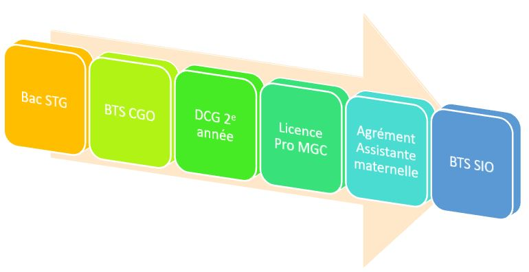

ACCUEIL
Bienvenue sur mon portfolio
Actuellement en reconversion professionnelle, j’ai choisi de quitter le domaine de la petite enfance et de me lancer dans l’informatique.
Ce Portfolio vous présentera mon parcours, ainsi que les projets conduits pour devenir développeuse informatique, dans le contexte de mon BTS Services Informatiques aux Organisations (SIO) – option B Solutions Logiciels et Applications Métiers (SLAM).
A la fin de mon BTS, je souhaiterai poursuivre mes études par titre professionnel niveau bac+3 – CDA : Concepteur Développeur d’Applications au sein de l’ENI à QUIMPER
🎓 Mon Parcours
Diplômes
- 2013: BAC Sciences et technologies de la Gestion (STG) - option Comptabilité et Finance des Entreprises (CFE)
- 2015: BTS Comptabilité et Gestion des Organisations (CGO)
- 2016: DCG 2e année Diplôme de Comptabilité et de Gestion
- 2017: Licence pro Métier de la Gestion et de la Comptabilité (MGC)
- 2021: Agrément Assistante Maternelle
- 2024 à aujourd'hui: BTS Services Informatiques aux Organisations (SIO) - option B Solutions Logicielles et Applications Métiers (SLAM)
Emplois Précédents
- 2017: Assistante comptable - Cabinet KPMG - Lorient (4 mois)
- 2018-2019: Assistante comptable - Cabinet Comptacom - Ploermel (19 mois)
- 2019-2020: Assistante comptable - Cabinet Sofico - Brest (16 mois)
- 2021-2023: Assistante Maternelle (24 mois)
CV

Compétences
HTML, CSS, Java, PHP, SQL...
Projets GRETA
...
Projets Persos
...
Stages
...
Veille Technologique
...
Contact
Ou me retrouver sur LinkedIn